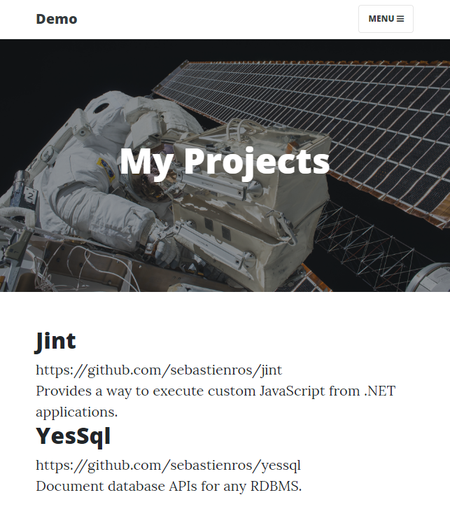
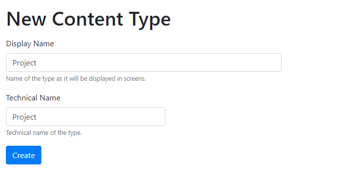
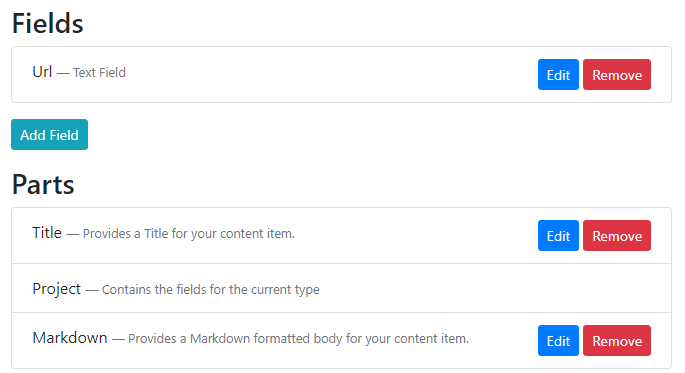
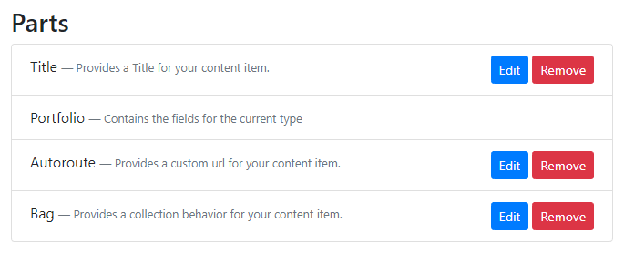

Orchard Core Theming explained
Orchard Core Theming解释道
This article explains how a Content Item is rendered, and the many ways in which the HTML that is rendered can be customized.
本文介绍了如何呈现内容项，以及可以自定义呈现的HTML的多种方式。
It also explains the fundamental theming concepts, namely Shapes, Alternates, Templates, Differentiators, Content Zones and Display Types.
它还解释了基本的主题概念，即__Shapes ， Alternates ，__Templates ， _ _ _ _ _ _ _ _ _ _ _ _ _ _ _ _ _ _ _ _ _ _ _ _ _ _ _ _ _
Goals
目标
Let's assume we want to add a portfolio section to our Blog where we could list all the projects we are working on, and be able to manage these projects individually, as opposed to having an static page where we would have to copy-paste the HTML for each project.
假设我们想在我们的博客中添加一个投资组合部分，我们可以列出我们正在处理的所有项目，并且能够单独管理这些项目，而不是拥有一个静态页面，我们必须复制粘贴HTML为每个项目。
The portfolio should have its own URL like /portfolio, and should display the projects in
投资组合应该有自己的URL，如/ portfolio，并且应该显示项目
a predefined order.
预定义的订单。
The end result would look like this:
最终结果如下：

Modeling the content
建模内容
The only obvious thing that is required is to create a new Project content type.
唯一显而易见的是创建一个新的“Project”内容类型。
However there are many different ways to model the content to represent a portfolio:
但是，有许多不同的方法可以对内容进行建模以表示投资组合：
-
Create a
Portfoliocontent type with aListcontent part that is limited toProjectcontent items. In this case, projects are independent from the list and can be reused elsewhere in the site (they are referenced by the portfolio). -
创建一个
Portfolio内容类型，其中List内容部分仅限于Project内容项。在这种情况下，项目独立于列表，可以在站点的其他位置重用（它们由组合引用）。 -
Create a
Portfoliocontent type with aBagPartcontent part that is limited toProjectcontent items. In this case project content items live inside the portfolio content item (they are contained by the portfolio). -
使用“BagPart”内容部分创建一个“Portfolio”内容类型，该内容部分仅限于“Project”内容项。在这种情况下，项目内容项目位于项目组合内容项目内（它们由项目组合包含）。
-
Create a
Liquid Pagecontent item to query and render all content items of typeProject. -
创建一个
Liquid Page内容项来查询和呈现“Project”类型的所有内容项。 -
Create a Razor Page that will use a query to load all the project content items.
-
创建一个将使用查询加载所有项目内容项的Razor页面。
This article will explain how to do it with a BagPart as it will provide the best performance by issuing a single database query, while allowing to do everything from the admin UI.
本文将解释如何使用BagPart来实现它，因为它将通过发出单个数据库查询提供最佳性能，同时允许从管理UI执行所有操作。
Creating the content types
创建内容类型
Project is a content type that will be composed of:
-
a
Titlepart to set a custom name -
用于设置自定义名称的
Title部分 -
a
Textfield to store the link to the project -
一个
Text字段，用于存储项目的链接 -
a
Markdownpart to provide a description in markdown format -
“Markdown”部分以标记格式提供描述
In the admin, select Content Definition then Content Types and create a new type named Project. Click Create.
在管理员中，选择__Content Definition__然后选择__Content Types__并创建一个名为Project的新类型。单击“创建”。
Select Title and Markdown for the parts we can add already, then click Save.
选择__Title__和__Markdown__作为我们可以添加的部分，然后单击__Save__。
Click Edit for the Markdown part. Select Wysiwyg editor and click Save. This will provide a richer markdown editing experience.
单击__Edit__作为__Markdown__部分。选择__Wysiwyg editor__并单击__Save__。这将提供更丰富的降价编辑体验。
Click Add Field, give it a display name Url, and select Text Field. Click Save then Save again.
单击__Add Field__，为其指定显示名称Url，然后选择__Text Field__。再次单击__Save__然后__Save__。
Take the time to drag and drop the Title part at the top of the list such that it will appear first in the editor. Then click Save.
花点时间将__Title__部分拖放到列表顶部，使其首先出现在编辑器中。然后单击__Save__。

At that point you could already create all the Project content items you want very easily. However we need to create a Portfolio type to contain and organize them.
此时，您可以非常轻松地创建所需的所有项目内容项。但是，我们需要创建一个“Portfolio”类型来包含和组织它们。
In the admin, select Content Definition then Content Types and create a new type named Portfolio. Click Create.
在管理员中，选择__Content Definition__然后选择__Content Types__并创建一个名为Portfolio的新类型。单击“创建”。
Select Title, Autoroute and Bag, then click Save.
选择__Title ， Autoroute__和__Bag__，然后单击__Save__。
Now we can configure the Portfolio content type to only accept Project content items in its bag.
现在我们可以将Portfolio内容类型配置为仅接受其包中的Project内容项。
Click Edit for the Bag part. Check Project and click Save.
单击__Edit__作为__Bag__部分。检查__Project__并单击__Save__。
Click Edit for the Autoroute part. Enter {{ ContentItem | display_text | slugify }} and check Allow custom path. Click Save. This will generate a customizable url or used what the user defines.
单击__Edit__作为__Autoroute__部分。输入{{ContentItem | display_text | slugify}}并检查__Allow自定义路径。单击_Save。这将生成可自定义的URL或使用用户定义的内容。
Take the time to drag and drop the Title part at the top of the list such that it will appear first in the editor. Then click Save.
花点时间将__Title__部分拖放到列表顶部，使其首先出现在编辑器中。然后单击__Save__。

Creating the Portfolio
创建投资组合
Click on New, then Portfolio.
单击__New__，然后单击__Portfolio__。
Give it a title like My Project.
给它一个像“我的项目”这样的标题。
In Permalink enter portfolio. This will be the url to display this content item.
在__Permalink__中输入portfolio。这将是显示此内容项的URL。
As you click on Add Item you'll notice that only Project is available as configured in the Bag part for Portfolio.
当您单击__Add Item__时，您会注意到只有__Project__可用于Portfolio部分的Bag部分。
Create a few Projects, then click Publish.
创建一些项目，然后单击__Publish__。
Click on the View button to see how it looks like already.
单击__View__按钮以查看它的样子。

At that point it already looks like something that could be shipped, and all the information that was entered is rendered in some way. Next step is to understand how all this content got rendered.
此时它已经看起来像是可以发送的东西，并且输入的所有信息都以某种方式呈现。下一步是了解所有这些内容是如何呈现的。
Rendering logic
渲染逻辑
Loading the portfolio from the database
从数据库加载投资组合
When the url /portfolio is requested, a custom action is called to render the content item that is associated with this URL.
当请求url/ portfolio时，将调用自定义操作来呈现与此URL关联的内容项。
The URL got associated with the portfolio thanks to the Aurotoute part that provides this mechanism.
由于提供此机制的__Aurotoute__部分，URL与组合相关联。
The autoroute registers a custom URL and stores the associated content item id.
autoroute注册自定义URL并存储关联的内容项ID。
At this point the action will issue a database request to load the portfolio in its entirety, including the projects, as this is how it was modeled with the Bag part.
此时，操作将发出数据库请求以完整地加载项目组合，包括项目，因为这是使用__Bag__部分建模的方式。
How a Content Item is displayed
如何显示内容项
With the portfolio in memory, the theming engine is invoked to render the content item.
使用内存中的投资组合，调用主题引擎来呈现内容项。
What happens at that moment is that all the components which want to participate in the rendering of a content item are invoked (the Display Drivers), and each component can return an object representing what to render (the Shapes).
此时发生的是调用所有想要参与内容项呈现的组件（显示驱动程序），并且每个组件都可以返回表示要呈现内容的对象（形状）。
In our case, the Title and Bag parts are provided by custom modules that have specific a Display Driver for each of these parts.
在我们的例子中，Title__和__Bag__部分由自定义模块提供，这些模块具有针对每个部分的特定__Display Driver。
Then another display driver will be invoked for each Text field.
然后将为每个__Text__字段调用另一个显示驱动程序。
The Bag part will invoke all available display drivers recursively, to render the Project content items it owns.
__Bag__部分将递归调用所有可用的显示驱动程序，以呈现它拥有的Project内容项。
Each of these drivers return one or more shapes that are added to named zones (or sections) of a global Shape called the Content shape.
这些驱动程序中的每一个都返回一个或多个形状，这些形状被添加到称为“Content”形状的全局__Shape__的命名区域（或部分）中。
For instance the TitleDisplayDriver class will return a shape of type TitlePart in the Header zone of the main shape at position 5. See TitlePartDisplay
例如，TitleDisplayDriver类将在位置为“5”的主形状的“标题”区域中返回类型为“TitlePart”的形状。参见[TitlePartDisplay]（../ OrchardCore.Title / Drivers / TitlePartDisplay.cs＃L14-L20）
Then the BagPart shape is added in the Content zone of the main shape at the position 5. See BagPartDisplay.
然后将'BagPart`形状添加到位于“5”的主形状的“内容”区域中。参见[BagPartDisplay]（../ OrchardCore.Flows / Drivers / BagPartDisplay.cs＃L39-L45）。
Once all the drivers for all the parts and all the fields have returned their shapes to specific zones of the main Content shape, Orchard will look for a matching template.
一旦所有部件和所有字段的所有驱动程序将其形状返回到主要“Content”形状的特定区域，Orchard将查找匹配的模板。
Template matching is done dynamically, and if no specific ones are created for a Content Type, then the file Content.cshtml (or Content.liquid) is used.
模板匹配是动态完成的，如果没有为内容类型创建特定的匹配，则使用文件Content.cshtml（或Content.liquid）。
The default template will go over all the zones it knows about and render the shapes that are inside each of them.
默认模板将遍历它所知道的所有区域，并渲染每个区域内的形状。
See Header where the Header zone shapes are rendered (the TitlePart shape) and also Content where the Content zone shapes are rendered (BagPart and TextField shapes).
参见[Header]（../ OrchardCore.Contents / Views / Content.cshtml＃L17），其中呈现Header区域形状（TitlePart形状）和[Content]（../ OrchardCore.Contents / Views /Content.cshtml#L24）呈现Content区域形状（BagPart和TextField形状）。
Customizing templates
自定义模板
We can already see that many shapes, and thus templates, are used to render a single content item. But every piece of HTML can be replaced, locally (for a page) or globally (over the site).
我们已经可以看到许多形状和模板用于呈现单个内容项。但是，每个HTML都可以替换，本地（对于页面）或全局（通过站点）。
Templates are usually provided by the modules that create the corresponding shape types, but can always be redefined by a Theme.
模板通常由创建相应形状类型的模块提供，但始终可以通过主题重新定义。
Themes are able to provide custom templates that will be used instead of the default ones. This means that a template can be copied to a theme in order to be customized.
主题能够提供将使用的自定义模板，而不是默认模板。这意味着可以将模板复制到主题以进行自定义。
Alternates
候补
When the Content shape is rendered into HTML, it is done using the Content.cshtml file as mentioned earlier.
当__Content__形状呈现为HTML时，它使用前面提到的Content.cshtml文件完成。
Similarly, the TitlePart shape will be converted using a TitlePart.cshtml template.
同样，__TitlePart__形状将使用TitlePart.cshtml模板进行转换。
This means that we can copy the Content.cshtml file from the OrchardCore.Contents module in order to customize how the Content shape is rendered.
这意味着我们可以从__OrchardCore.Contents__模块复制Content.cshtml文件，以自定义__Content__形状的呈现方式。
One issue with customizing the Content.cshtml file is that it would change how any content item is rendered.
自定义Content.cshtml文件的一个问题是它会改变任何内容项的呈现方式。
The original file is generic enough to be usable with any content type, and does so by rendering a generic <article> element with a <header>, a body and a <footer>.
原始文件足够通用，可用于任何内容类型，并通过使用<header>，body和<footer>呈现通用<article>元素来实现。
Each driver provides shapes that will target these predefined zones, and the Content.cshtml default template just renders them all in order.
每个驱动程序提供将定位这些预定义区域的形状，而“Content.cshtml”默认模板只是按顺序呈现它们。
For this reason it is not recommended to change this file as it may impact too many pages, unless you decide to change the way content items are rendered by default.
因此，建议不要更改此文件，因为它可能会影响太多页面，除非您决定更改默认情况下呈现内容项的方式。
To be able to change how specific content types are rendered the theming engine provide the concept of Alternates.
为了能够更改特定内容类型的呈现方式，主题引擎提供了__Alternates__的概念。
An alternate is an optional shape type that should be used if a template can be found for it.
替代是可选的形状类型，如果可以为其找到模板，则应使用该形状类型。
Alternates provide more specific ways to customize templates.
替代提供了更具体的方法来自定义模板。
In the case of our Portfolio Content shape, a special alternate named Content__Portfolio is added so that we can provide a template for the Content shape that will be used only for Portfolio content items.
在我们的Portfolio __Content__形状的情况下，添加了一个名为Content__Portfolio的特殊替换，以便我们可以为__Content__形状提供仅用于__Portfolio__内容项的模板。
When a shape contains __ in its name, the theming engine will match a file with a - instead.
当一个形状在其名称中包含__时，主题引擎将匹配一个带有-的文件。
In this case we can provide a template named Content-Portfolio.cshtml in order to customize how a Portfolio content item is rendered.
在这种情况下，我们可以提供名为Content-Portfolio.cshtml的模板，以便自定义__Portfolio__内容项的呈现方式。
This file can be created by copying the original Content.cshtml file or by creating a brand new one.
可以通过复制原始的Content.cshtml文件或创建一个全新的文件来创建此文件。
Many other alternates are available to be able to selectively create templates for a content item.
许多其他替代方案可用于选择性地为内容项创建模板。
请参阅[内容模板]（../ OrchardCore.Templates / README / #content-templates）
Customizing Part templates
自定义零件模板
It might not be necessary to change the Content template, but only to change how a single part or field is rendered.
可能没有必要更改__Content__模板，但只更改单个部件或字段的呈现方式。
These are also rendered as shapes and have specific templates that can be customized.
它们也呈现为形状，并具有可自定义的特定模板。
The Title part can be customized by creating a template for the TitlePart shape. See Title
可以通过为TitlePart形状创建模板来自定义__Title__部分。见[标题]（../ OrchardCore.Title / README /）
Changing how the title is rendered for every content items would mean creating one of these files:
更改每个内容项的标题呈现方式意味着创建以下文件之一：
TitlePart.cshtml
TitlePart.cshtml
<h1>@Model.Title</h1>
<font color=#0099ff size=4 face="黑体"><H1> @ Model.Title </ H1></font>
TitlePart.liquid
TitlePart.liquid
<h1>{{ Model.Title }}</h1>
<font color=#0099ff size=4 face="黑体"><h1> {{Model.Title}} </ h1></font>
Assuming only the title of Portfolio content items should be customized, alternates can be used to create a specialized template. Content part shapes have alternates specific to their parent content type, in this case Portfolio__TitlePart. see Content type, Display type, Part type
假设只应定制__Portfolio__内容项的标题，则可以使用替换项创建专用模板。内容部分形状具有特定于其父内容类型的替代，在这种情况下为“Portfolio__TitlePart”。参见[内容类型，显示类型，零件类型]（../ OrchardCore.Templates / README /＃contentstype_displaytype__parttype）
The template file name for this shape is Portfolio-TitlePart.cshtml.
此形状的模板文件名是Portfolio-TitlePart.cshtml。
Customizing Field templates
自定义字段模板
Because multiple fields of the same type can be added to the same content type or even the same content part, their shape type is not the optimal way to customize the template. Fortunately different alternates based on their name are available.
由于可以将相同类型的多个字段添加到同一内容类型或甚至相同的内容部分，因此它们的形状类型不是自定义模板的最佳方式。幸运的是，基于他们的名字可以使用不同的替代品。
For a list of available shape alternates for fields see Content field templates
有关字段的可用形状替换列表，请参阅[内容字段模板]（../ OrchardCore.Templates / README /＃contents-field-templates）
In our case, the Project has a Text field named Url. The best shape to override in this case is Project__Url which will match the template Project-Url.cshtml.
在我们的例子中，__Project__有一个名为Url的__Text__字段。在这种情况下，要覆盖的最佳形状是Project__Url，它将匹配模板Project-Url.cshtml。
The model accessible from this field is described here Available fields
此字段中可访问的模型在此处描述[可用字段]（../ OrchardCore.ContentFields / README / #available-fields）
This page explains that the Text field contains a property Text that contains the value of the field.
此页面解释__Text__字段包含属性Text，其中包含字段的值。
To create a link for this field we can create these templates.
要为此字段创建链接，我们可以创建这些模板。
Project-Url.cshtml
项目Url.cshtml
<a href="@Model.Field.Text">External url</a>
<font color=#0099ff size=4 face="黑体"><a href=\"@Model.Field.Text\">外部网址</a></font>
Project-Url.liquid
项目Url.liquid
<a href="{{ Model.Field.Text }}">External url</a>
<font color=#0099ff size=4 face="黑体"><a href=\"{{ Model.Field.Text}}“>外部网址</a></font>
Display types
显示类型
When a content item is rendered by the theming engine, a specific Display Type is provided as a context of how rendered elements will be used. The default display type is called Detail. This is the one that is used to render a content item in its entirety.
当主题引擎呈现内容项时，提供特定的__Display Type__作为如何使用呈现元素的上下文。默认显示类型称为__Detail__。这是用于完整呈现内容项的那个。
When content items are rendered in a list, the convention is to use the Summary display type.
当内容项在列表中呈现时，约定是使用“摘要”显示类型。
Looking at how our Portfolio content item is rendered, the Project content items are displayed as a list, using the Summary display type.
查看我们的__Portfolio__内容项是如何呈现的，__Project__内容项使用Summary显示类型显示为列表。
Alternates exist to target templates for a specific display type.
存在用于特定显示类型的目标模板的替代。
For instance we can customize how Project content items are displayed when rendered as part of a list by create a template for the shape Content_Summary__Project, which corresponds to the file Content-Project.Summary.cshtml.
例如，我们可以通过创建形状为“Content_Summary__Project”的模板来定制在作为列表的一部分呈现时如何显示__Project__内容项，该模板对应于文件“Content-Project.Summary.cshtml”。
请参阅[模板文档]（../ OrchardCore.Templates / README / #content_displaytype__contenttype）
Here, the _ in the shape name is replaced by a dot (.) in the template name, and the dotted portion of the name is moved at the end.
这里，形状名称中的_被模板名称中的点（.）替换，名称的虚线部分在末尾移动。
Content zones, differentiators
内容区，差异化
As previously stated, the Content shape is made of zones that contains all the shapes which were provided by the display drivers, and ways to customize the templates for theses shapes was explained.
如前所述，__Content__形状由包含显示驱动程序提供的所有形状的区域组成，并解释了为这些形状自定义模板的方法。
Sometimes it is necessary to be able to reorganize the list of shapes that are added in these zones, for instance to remove some shapes of the list, or move them to a different location.
有时需要能够重新组织在这些区域中添加的形状列表，例如删除列表的某些形状，或将它们移动到其他位置。
In the case of the Project main content shape, the Content zone contains two shapes:
对于__Project__主要内容形状，“Content”区域包含两个形状：
-
TextField -
TextField -
MarkdownPart -
MarkdownPart
The TitlePart shape is rendered in the zone called Header.
TitlePart形状在名为Header的区域中呈现。
Some templating helpers provide ways to select and remove these shapes.
一些模板助手提供了选择和删除这些形状的方法。
In order to cherrypick specific shapes from a zone, shapes are given a nickname called a Differentiator.
为了从区域中挑选特定形状，形状被赋予称为__Differentiator__的昵称。
This is necessary, as multiple identical shape types can be added to content zones. See Shape differentiators
这是必要的，因为可以将多个相同的形状类型添加到内容区域。参见[形状微分器]（../ OrchardCore.Templates / README /＃shape-differentiationators）
For the Url text field the differentiator is Project-Url. For the Markdown part it is MarkdownPart.
对于Url文本字段，区别符是Project-Url。对于__Markdown__部分，它是MarkdownPart。
This lets us customize the Content shape template for Project.
这让我们可以为__Project__自定义__Content__形状模板。
Content-Project.cshtml
内容Project.cshtml
<article>
<font color=#0099ff size=4 face="黑体"><文章></font>
<header>
@await DisplayAsync(Model.Header.TitlePart)
@{ Model.Header.Remove("TitlePart") }
<font color=#0099ff size=4 face="黑体"></font>
@await DisplayAsync(Model.Header)
</header>
<font color=#0099ff size=4 face="黑体"></font>
@await DisplayAsync(Model.Content["Project-Url"])
@{ Model.Content.Remove("Project-Url") }
<font color=#0099ff size=4 face="黑体"></font>
@await DisplayAsync(Model.Content.MarkdownPart)
@{ Model.Content.Remove("MarkdownPart") }
<font color=#0099ff size=4 face="黑体"></font>
@await DisplayAsync(Model.Content)
<footer>
@await DisplayAsync(Model.Footer)
</footer>
</article>
<font color=#0099ff size=4 face="黑体"></文章></font>
Content-Project.liquid
内容Project.liquid
<article>
<font color=#0099ff size=4 face="黑体"><文章></font>
<header>
{{ Model.Header.TitlePart | shape_render }}
{% shape_remove_item Model.Header "TitlePart" %}
<font color=#0099ff size=4 face="黑体"></font>
{{ Model.Header | shape_render }}
</header>
<font color=#0099ff size=4 face="黑体"></font>
{{ Model.Content["Project-Url"] | shape_render }}
{% shape_remove_item Model.Content "Project-Url" %}
<font color=#0099ff size=4 face="黑体"></font>
{{ Model.Content.MarkdownPart | shape_render }}
{% shape_remove_item Model.Content "MarkdownPart" %}
<font color=#0099ff size=4 face="黑体"></font>
{{ Model.Content | shape_render }}
<footer>
@await DisplayAsync(Model.Footer)
</footer>
</article>
<font color=#0099ff size=4 face="黑体"></文章></font>
Here the known shapes are extracted from their respective zones, then rendered explicitly.
这里，已知的形状从它们各自的区域中提取，然后明确地呈现。
Finally the rest of the shapes in each zones are rendered in case more content fields or parts are added later on to the content type.
最后，如果稍后将更多内容字段或部分添加到内容类型，则呈现每个区域中的其余形状。
If the zones weren't being rendered, the new elements would not show up automatically.
如果未渲染区域，则新元素不会自动显示。
Instead of rendering the shapes that have been removed from the zone, some custom rendering can be applied directly.
可以直接应用某些自定义渲染，而不是渲染已从区域中删除的形状。
One advantage of reusing the shape is that its template might contain some complex logic that is not easily reusable.
重用形状的一个优点是其模板可能包含一些不易重复使用的复杂逻辑。
This is the case for the MarkdownPart shape for instance, as it will have to convert some markdown content to HTML.
例如，“MarkdownPart”形状就是这种情况，因为它必须将一些降价内容转换为HTML。
The TitlePart however could easily be ignored and the Content template directly access the Title property of this shape.
然而，TitlePart很容易被忽略，而__Content__模板直接访问这个形状的Title属性。